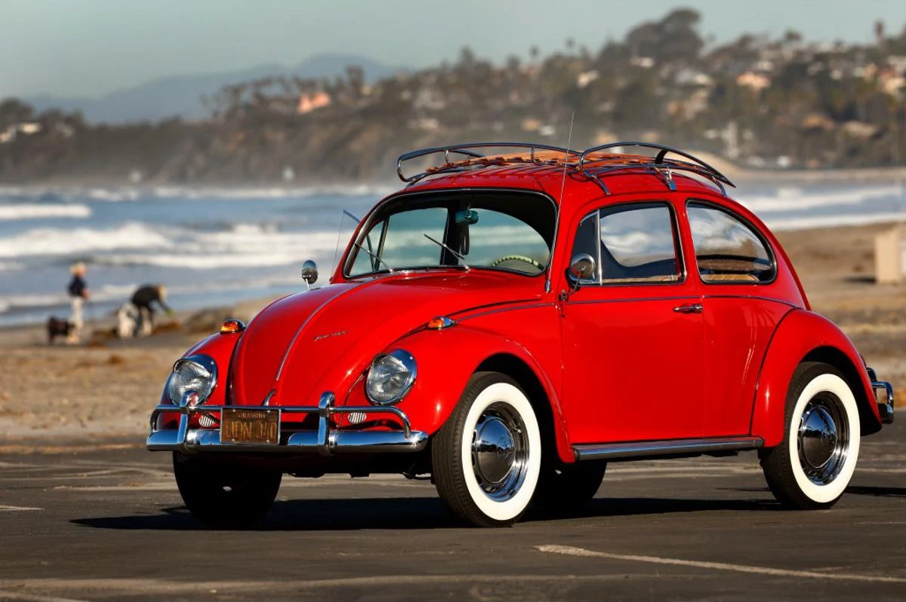

1.300 cc
38 cv
Manual de 4 marchas
4 opostos
O Fusca 1967 foi o primeiro carro a ultrapassar a marca de 1 milhão de unidades produzidas no Brasil.O design do Fusca foi criado por Ferdinand Porsche, o mesmo fundador da Porsche.O Fusca foi eleito o carro do século XX em 1999, em uma pesquisa internacional.
